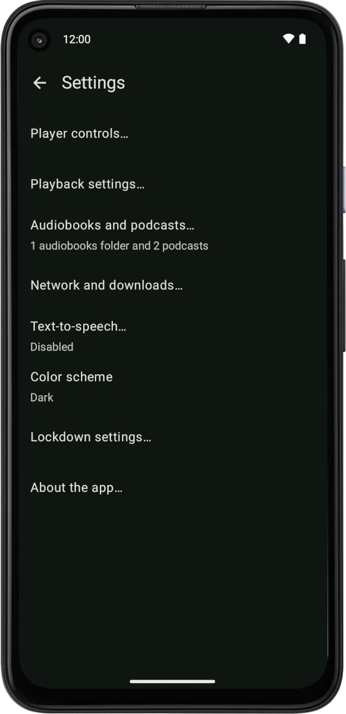
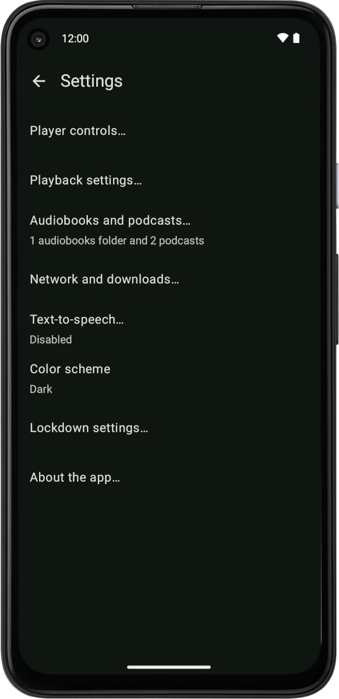
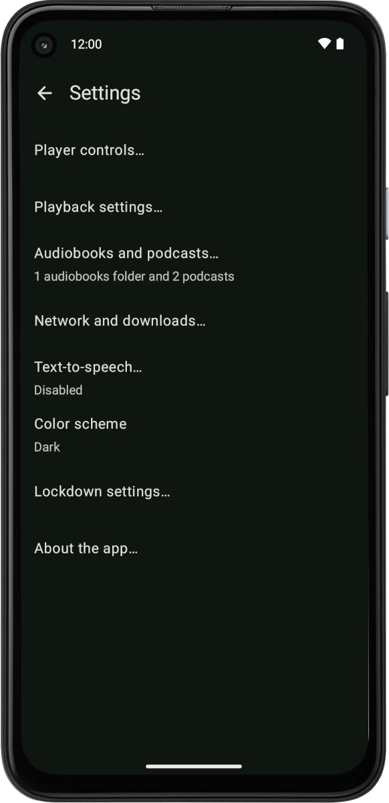

Homer is an audiobook and podcast player designed for the elderly and visually impaired.
With Homer you can repurpose an Android tablet to an easy to use dedicated player for audiobooks and podcasts.
In a typical scenario one person (e.g. a caregiver, a library assistant) will set up Homer, install content,
lock down the device and hand it over to the user.
The user can then listen to books and podcasts with a simple user interface. With the lock down mode enabled
they don't need to worry about inadvertantly changing settings, switching to another app or otherwise
"breaking" the device.
